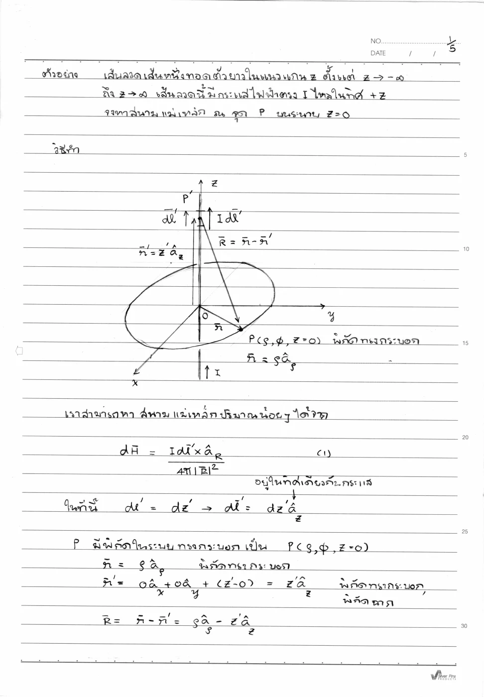
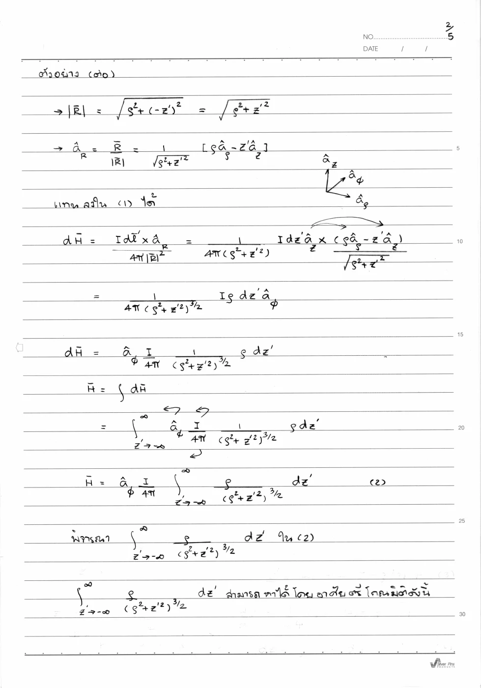
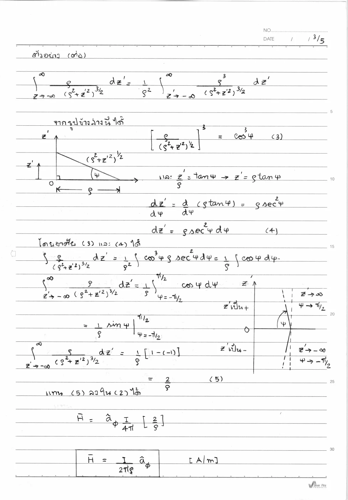
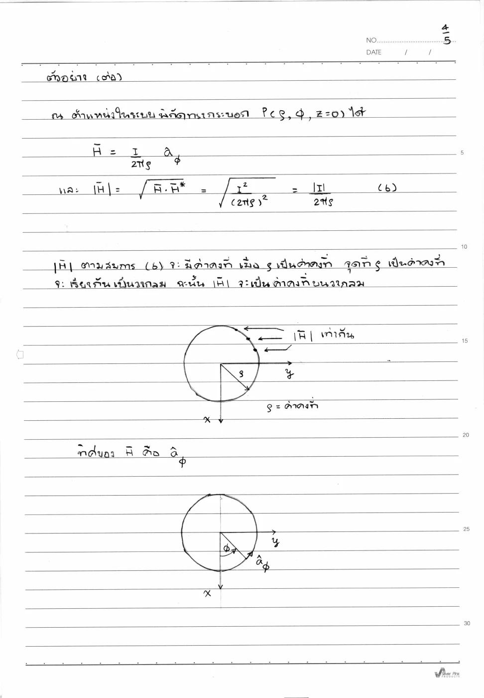
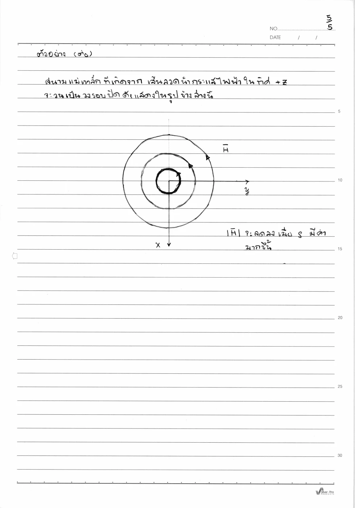

01 กฎบิโอต์–ซาวารต์ทั่วไป
dH=I dl′ × aR4πR²=I dl′ × R4πR³
เหตุใดจึงแปลงรูปเช่นนี้? กฎเป็นจุดตั้งต้นเชิงกายภาพของแม่เหล็กสถิต รูปสองแบบเท่ากันเมื่อแทนฐานระยะ R/R
Biot–Savart Law · Hayt §7.1; Sadiku §7.2
ประจุเคลื่อนที่สร้างสนามชนิดใด และทำไมลูกศรสนามรอบลวดจึงไม่ชี้ออกเหมือนสนามประจุ?
กระแสแต่ละส่วนเล็กสร้างสนามแม่เหล็กที่วนรอบแนวการไหล สนามไม่ได้ชี้จากลวดตรงมายังผู้รับแบบไฟฟ้า ผลคูณไขว้จึงเลือกลูกศรที่ตั้งฉากทั้งทิศกระแสและเวกเตอร์ระยะ
ลวดตรงยาวอนันต์ไม่มีปลายและไม่มีมุมรอบแกนที่พิเศษ ทุกส่วนให้สนามทิศ ϕ เดียวกันที่จุดสังเกต แต่ส่วนที่ไกลตาม z มีผลอ่อนลง ปริพันธ์รวมส่วนเหล่านั้นให้การลดแบบหนึ่งส่วนรัศมี
ขอบเขตแบบจำลอง: กระแสสถิตลวดตรงอนันต์เส้นเล็ก จุดสังเกตไม่อยู่บนแกน
เหตุใดจึงแปลงรูปเช่นนี้? กฎเป็นจุดตั้งต้นเชิงกายภาพของแม่เหล็กสถิต รูปสองแบบเท่ากันเมื่อแทนฐานระยะ R/R
เหตุใดจึงแปลงรูปเช่นนี้? จุดสังเกตอยู่ z=0 เลือกแกนแหล่ง z′ และกระแสทิศ +z
เหตุใดจึงแปลงรูปเช่นนี้? z×ρ=ϕ และ z×z=0 แสดงทิศก่อนอินทิเกรต ไม่เดาทิศหลังได้ขนาด
เหตุใดจึงแปลงรูปเช่นนี้? I กับ ρ และฐานที่จุดสังเกตคงที่ขณะรวม z′ จึงออกนอกปริพันธ์ได้
เหตุใดจึงแปลงรูปเช่นนี้? ρ>0 และ cosψ เป็นบวกในช่วงนี้ จึงลดรากกำลังสามได้โดยไม่ทำเครื่องหมายผิด
เหตุใดจึงแปลงรูปเช่นนี้? sec² จากดิฟเฟอเรนเชียลหาร sec³ เหลือ cos และค่าปลายเป็น 1−(−1)=2
เหตุใดจึงแปลงรูปเช่นนี้? ρ ตัดไปหนึ่งกำลัง กระแสกลับทิศทำให้สนามกลับ ไม่คูณ μ หากโจทย์ถาม H
เหตุใดจึงแปลงรูปเช่นนี้? สูตรลวดเส้นอุดมคติไม่อธิบายสนามภายในตัวนำรัศมีจริง และลวดจำกัดต้องใช้ขอบจำกัด
เขียนสูตรทั่วไป → ระบุพิกัดและทิศ → วิเคราะห์ด้วยมือ → ใช้ขอบเขต → ตรวจหน่วย SI และความหมาย
สนามรอบบัสบาร์กำหนดแรงแม่เหล็กระหว่างตัวนำกำลัง และการวางตัวนำส่งผลต่อแรงขณะลัดวงจร สูตรลวดอนันต์เป็นประมาณการเมื่ออยู่ห่างปลาย
ผลเดียวกันจะหาได้สั้นกว่าด้วยแอมแปร์ในบทถัดไป แต่การพิสูจน์นี้ทำให้รู้ว่าความสมมาตรและลวดยาวเป็นเงื่อนไข ไม่ใช่ข้อจริงของทุกตัวนำ
ลองอธิบายด้วยคำของตนเอง: ถ้ากลับกระแสเป็น −z แต่ตำแหน่งเดิม ทิศสนามต้องเปลี่ยนอย่างไร? ใช้ผลคูณไขว้ตรวจ
กลับกระแสในภาพเส้นสนามรอบลวด ดูลูกศรบนวงกลับทิศ แล้วเพิ่มระยะสองเท่าเพื่อตรวจขนาดลดครึ่งหนึ่ง
ก่อนปรับ: ทำนายทิศและขนาด · หลังปรับ: อธิบายด้วยสมการและเงื่อนไข
แนวคิดของบทนี้เป็นฐานให้ Set 16, Set 18
เลขหน้าทั้งหมดนับหน้า PDF รวมปก ตำราเป็นแหล่งตรวจวิธีและนิยาม ไม่ได้กล่าวว่าข้อมูลทุกตัวอย่างตรงกับข้อสอบ บทอธิบายและการพิสูจน์ด้านบนเรียบเรียงเพื่อการสอน
กระแสคงตัวก่อสนามแม่เหล็กที่มีทิศจากผลคูณไขว้ เวกเตอร์ R ต้องชี้จากจุดแหล่งกำเนิดไปจุดสังเกต การอินทิเกรตต้องเก็บทิศเวกเตอร์จนแน่ใจว่าองค์ประกอบที่รวมกันมีฐานเดียวกัน
อ่าน สไลด์หลัก · หน้า PDF 1 ควบคู่กับคำอธิบายด้านล่าง เพื่อเทียบรูปและลำดับสมการ
ลำดับ dl′ × aR สลับไม่ได้ อย่าใช้สูตรลวดอนันต์กับลวดจำกัดโดยไม่พิจารณาปลายลวด สูตร H ไม่มี μ; แปลงเป็น B ภายหลังด้วย B = μH
ส่วนกระแสมีทิศตามลวด สำหรับลวดแกน z และจุดสังเกต z=0 ผลคูณไขว้ az × aρ ทำให้เหลือ aϕ เดียวตลอดลวด จึงดึงเวกเตอร์ฐานนี้ออกจากอินทิกรัลได้ ตัวอย่างด้านล่างแสดงการแทน z′ = ρ tan ψ และประเมินขอบเขตครบ
| สัญลักษณ์ | ความหมาย / คำอ่าน | SI |
|---|---|---|
| H | ความเข้มสนามแม่เหล็ก | A/m |
| I | กระแสเส้นลวด | A |
| R | ระยะจากแหล่งกำเนิดถึงจุดสังเกต | m |
| dl′ | ส่วนความยาวแหล่งกำเนิดมีทิศตามกระแส | m |
แสดง 13 หน้า
แต่ละรายการเรียบเรียงภาษาไทย พร้อมภาพต้นฉบับหน้าเดียวกัน ภาพคงรูปเวกเตอร์และลำดับการพิสูจน์ของอาจารย์ เปิดเฉพาะหน้าที่ต้องการอ่าน
| สัญลักษณ์ | คำอ่านและความหมาย | SI |
|---|---|---|
| x,y,z; r,ρ; θ,ϕ | เอ็กซ์ วาย แซด; อาร์ โร; ทีตา ไฟ · พิกัดและมุม | m; m; rad |
| E, D; H, B | อี ดี; เอช บี · สนามและฟลักซ์ไฟฟ้า/แม่เหล็ก | V/m, C/m²; A/m, T |
| J, K; ρv, ρs | เจ เค; โรซับวี โรซับเอส · กระแสปริมาตร/ผิวและประจุปริมาตร/ผิว | A/m², A/m; C/m³, C/m² |
| ε, μ, σ; εr, μr | เอปไซลอน มิว ซิกมา · สภาพยอม ความซาบซึมได้ สภาพนำ; ค่าสัมพัทธ์ | F/m, H/m, S/m; ไม่มีหน่วย |
| P, χe | พี ไคซับอี · โพลาไรเซชันและความไวทางไฟฟ้า | C/m², ไม่มีหน่วย |
| I, Q, q; V, V0 | ไอ คิว คิว; วี วีซับศูนย์ · กระแส ประจุรวม/ย่อย ศักย์/แรงดันกำหนด | A, C, C; V, V |
| C, W; S, A; d,L | ซี ดับเบิลยู; เอส เอ; ดี แอล · ความจุ พลังงาน พื้นที่ ระยะห่าง ความยาว | F, J; m², m²; m,m |
| A, Φ | เอ ไฟตัวใหญ่ · ศักย์เวกเตอร์แม่เหล็กและฟลักซ์ | Wb/m, Wb |
| ω, f, λ; k, η | โอเมกา เอฟ แลมบ์ดา; เค อีตา · ความถี่เชิงมุม ความถี่ ความยาวคลื่น เลขคลื่น อิมพีแดนซ์ | rad/s, Hz, m; rad/m, Ω |
| v, t; dl, ds, dv | วี ที; ดีแอล ดีเอส ดีวี · ความเร็ว เวลา ส่วนย่อยความยาว ผิว ปริมาตร | m/s, s; m,m²,m³ |
| an, j; ∇, ∇2 | เอซับเอ็น เจ; เดล ลาปลาเซียน · เวกเตอร์หน่วย หน่วยจินตภาพ ตัวดำเนินการพื้นที่ | ไม่มีหน่วย; ต่อระยะทางและระยะทาง² |
| Es, Hs | อีซับเอส เอชซับเอส · เฟสเซอร์เชิงอวกาศ | V/m, A/m |
องค์ประกอบสนามมีหน่วยเดียวกับสนาม ตัวห้อย t,n คือสัมผัสและปกติ ตัวห้อย 1,2 คือตัวกลาง ไพรม์ระบุแหล่งกำเนิด a ที่เป็นค่าคงตัวจากการอินทิเกรตมีหน่วยตามสมการที่ใช้; a ที่เป็นเวกเตอร์หน่วยไม่มีหน่วย
ลวดบนแกน z มีกระแส I ไปทาง +z จงพิสูจน์สนาม H ที่ P(ρ,ϕ,0) ด้วยอินทิกรัลเชิงวิเคราะห์ ห้ามเริ่มจากสูตรสำเร็จลวดอนันต์
ALL-Q04 · บิโอต์–ซาวารต์ · เรียบเรียงจากไฟล์จริง · Set 15 เฉลยลายมือ · หน้า PDF 1 · ชุดโจทย์เดิม · หน้า PDF 14 · Hayt ลวดอนันต์ · หน้า PDF 196 · Sadiku §7.2 พิสูจน์ลวดตรง · หน้า PDF 274
ทำไมจึงทำขั้นนี้? กฎเป็นจุดตั้งต้นเชิงกายภาพของแม่เหล็กสถิต รูปสองแบบเท่ากันเมื่อแทนฐานระยะ R/R
ทำไมจึงทำขั้นนี้? จุดสังเกตอยู่ z=0 เลือกแกนแหล่ง z′ และกระแสทิศ +z
ทำไมจึงทำขั้นนี้? z×ρ=ϕ และ z×z=0 แสดงทิศก่อนอินทิเกรต ไม่เดาทิศหลังได้ขนาด
ทำไมจึงทำขั้นนี้? I กับ ρ และฐานที่จุดสังเกตคงที่ขณะรวม z′ จึงออกนอกปริพันธ์ได้
ทำไมจึงทำขั้นนี้? ρ>0 และ cosψ เป็นบวกในช่วงนี้ จึงลดรากกำลังสามได้โดยไม่ทำเครื่องหมายผิด
ทำไมจึงทำขั้นนี้? sec² จากดิฟเฟอเรนเชียลหาร sec³ เหลือ cos และค่าปลายเป็น 1−(−1)=2
ทำไมจึงทำขั้นนี้? ρ ตัดไปหนึ่งกำลัง กระแสกลับทิศทำให้สนามกลับ ไม่คูณ μ หากโจทย์ถาม H
หน่วย A/m ทิศ aϕ จาก az × aρ เมื่อกลับทิศ I สนามกลับทิศ; สูตรใช้ได้ที่ ρ > 0 นอกเส้นลวดอุดมคติ
ทำไมจึงทำขั้นนี้? คืนตัวประกอบ Iρ/(4π) และทิศมือขวา จึงได้หน่วย A/m
เลื่อนพารามิเตอร์เพื่อดูแนวโน้มและเครื่องหมาย แล้วกลับไปพิสูจน์ด้วยสูตรตั้งต้นในตัวอย่าง
ตัวอย่างเพิ่มเติม โน้ต และภาพลายมือแสดงเป็นหน้าต้นฉบับเรียงลำดับ ใช้คำอธิบายและวิธีทำในบทนี้ประกอบ
วาดแหล่ง z′ และจุดสังเกต z=0; R = ρ aρ − z′ az

ผลคูณไขว้เหลือทิศ aϕ แล้วตั้งอินทิกรัลตาม z′

แทน z′ = ρ tan ψ เปลี่ยนขอบเขตและประเมิน sin ψ ที่ปลาย

H = I aϕ/(2πρ) ขนาดเท่ากันบนวงรัศมีคงที่

สนามของกระแส +z วนทวนเข็มเมื่อมองจาก +z ตามมือขวา
